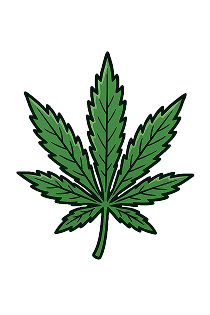

Uzależnienie od Marihuany
Czym jest uzależnienie od marihuany i haszyszu?
Uzależnienie od przetworów konopi (marihuany, haszyszu) ma przede wszystkim charakter psychiczny. Choć często jest postrzegane jako "miękki" narkotyk, regularne używanie może prowadzić do utraty kontroli, zaniedbywania obowiązków i problemów w codziennym funkcjonowaniu. Główna substancja psychoaktywna, THC, wpływa na system nagrody w mózgu, co sprzyja rozwojowi uzależnienia.
Typowe objawy uzależnienia
- Przymus używania: Silna potrzeba sięgnięcia po marihuanę, często w celu relaksu, ucieczki od problemów lub zaśnięcia.
- Utrata zainteresowań: Stopniowe rezygnowanie z hobby i aktywności, które kiedyś sprawiały przyjemność, na rzecz palenia.
- Zespół amotywacyjny: Stan apatii, bierności, spadku energii i trudności z podejmowaniem jakichkolwiek działań.
- Problemy z pamięcią i koncentracją: Regularne używanie THC może upośledzać funkcje poznawcze.
- Używanie mimo negatywnych konsekwencji: Kontynuowanie palenia pomimo problemów w szkole, pracy czy w relacjach z bliskimi.
Skutki zdrowotne i psychiczne
Długotrwałe używanie marihuany, zwłaszcza w młodym wieku, niesie ze sobą ryzyko:
- Problemów z układem oddechowym (w przypadku palenia),
- Zaburzeń lękowych, napadów paniki i paranoi,
- Pogorszenia lub wywołania utajonych chorób psychicznych, np. schizofrenii,
- Trudności w uczeniu się i przyswajaniu nowych informacji.